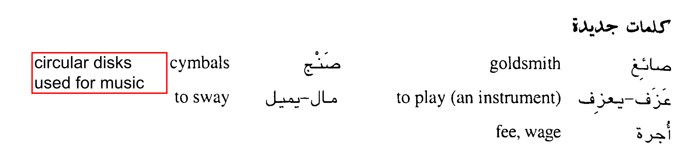

التاجر والصائغ
The merchant and goldsmith
كان عند تاجر جوهر قيمته عالية وكان يريد
ان يثقبه، فاستأجر صائغأ أجرته مئة دينار في اليوم، وأخذه
الى بيته ليثقب الجوهر. وكان في بيته صنج . فقال للصائغ: هل تعزف
على الصنج؟ قال الصائغ: نعم. وكان يعزف جيدأ.
فطلب منه التاجر أن يعزف، فاخذ ا لصائغ الصنج وعزف عليه عزفأ جميلأ فطرب ا
لتاجر كثير أ، وطلب منه ان يستمر في العزف. وظل ا لصائغ يعزف والتاجر يميل
الى اليمين واليسار من ا لطرب حتى غابت ا شمس. فقال الصائغ: انتهى اليوم،
أعطني الاجرة. فرد التاجر: وهل عملت شيئأ حتى أدفع لك أجرة؟ فقال الصائغ:
نعم، لقد عملت ما طلبت منى ان أعمل. وظل حتى أخذ المئة دينار وبقى الجوهر غير
مثقوب
